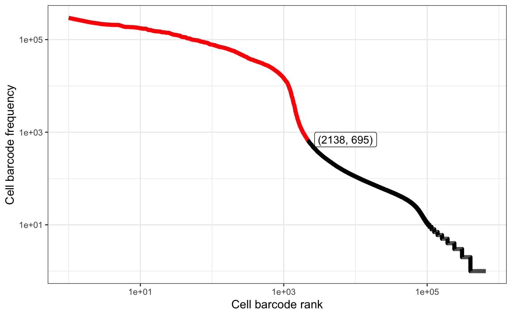
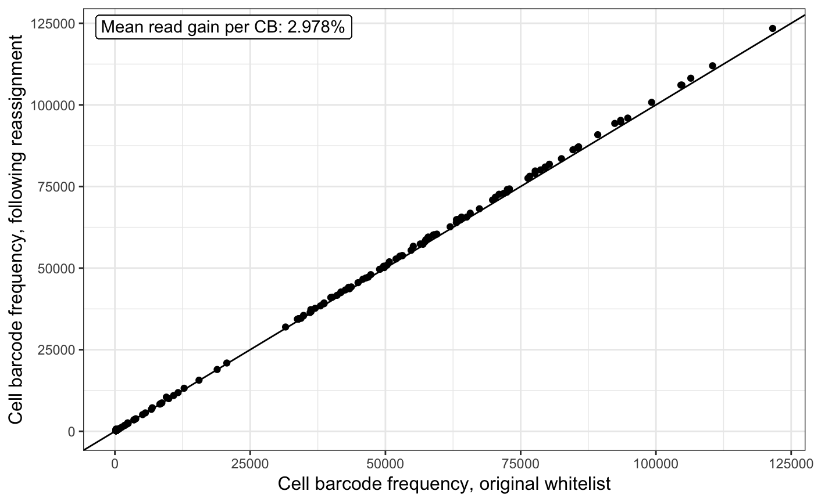
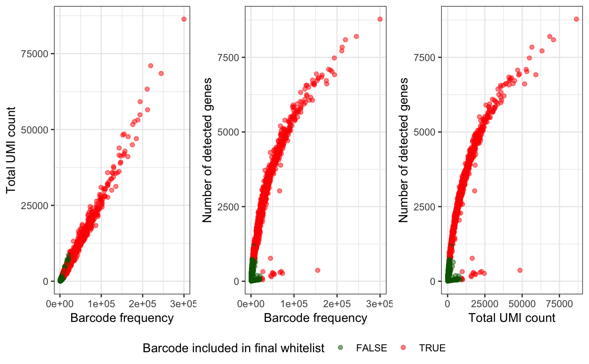
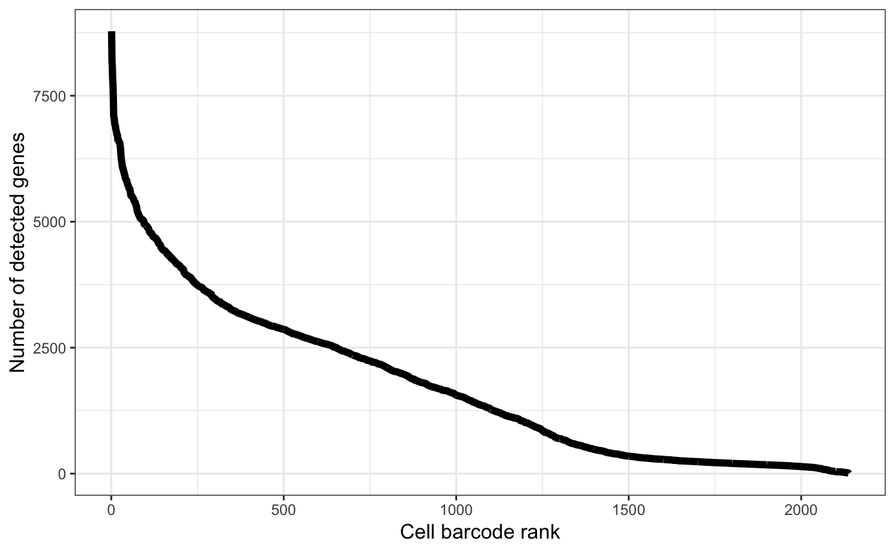

Abstract
alevinQC reads output files from alevin and generates summary reports.The purpose of the alevinQC package is to generate a summary QC report based on the output of an alevin (Srivastava et al. 2018) run. The QC report can be generated as a html or pdf file, or launched as a shiny application.
Currently, alevinQC can be installed from GitHub, using e.g. the BiocManager CRAN package.
if (!requireNamespace("BiocManager", quietly = TRUE))
install.packages("BiocManager")
BiocManager::install("csoneson/alevinQC")After installation, load the package into the R session.
For more information about running alevin, we refer to the documentation. When invoked, alevin generates several output files in the specified output directory. alevinQC assumes that this structure is retained, and will return an error if it isn’t - thus, it is not recommended to move or rename the output files from alevin. alevinQC assumes that the following files (in the indicated structure) are available in the provided baseDir (note that currently, in order to generate the full set of files, alevin must be invoked with the --dumpFeatures flag).
The report generation functions (see below) will check that all the required files are available in the provided base directory. However, you can also call the function checkAlevinInputFiles() to run the check manually. If one or more files are missing, the function will raise an error indicating the missing file(s).
The alevinQCReport() function generates the QC report from the alevin output. Depending on the file extension of the outputFile argument, and the value of outputFormat, the function can generate either an html report or a pdf report.
In addition to static reports, alevinQC can also generate a shiny application, containing the same summary figures as the pdf and html reports.
Once created, the app can be launched using the runApp() function from the shiny package.
The individual plots included in the QC reports can also be independently generated. To do so, we must first read the alevin output into an R object.
alevin <- readAlevinQC(baseDir = baseDir)
#> reading in alevin gene-level counts and inferential variance across cells
#> Joining, by = "CB"The resulting list contains three entries:
cbTable: a data.frame with various inferred characteristics of the individual cell barcodessummaryTables: a list of data.frames with summary information about the full data set, the initial set of whitelisted cells and the final set of whitelisted cells, respectivelyversionTable: a matrix with information about the invokation of alevinhead(alevin$cbTable)
#> CB originalFreq ranking collapsedFreq mappingRate
#> 1 TGGTTCCAGTCCATAC 294486 1 299998 0.705001
#> 2 TGCTACCCACCAGCAC 236420 2 244868 0.698152
#> 3 TTCTTAGGTGAAGGCT 215630 3 219506 0.713876
#> 4 TGATTTCCAATAACGA 208554 4 210984 0.715746
#> 5 ATGCGATTCACCCTCA 207135 5 211894 0.641656
#> 6 CACACAAAGTCAAGCG 189231 6 193700 0.699179
#> duplicationRate dedupRate nbrGenesAboveMean nbrMappedUMI totalUMICount
#> 1 0.00207650 0.591592 5963 211499 86377.79
#> 2 0.00232080 0.599421 5431 170955 68480.92
#> 3 0.00141115 0.546762 5336 156700 71022.42
#> 4 0.00140541 0.580716 4974 151011 63316.44
#> 5 0.00107668 0.584400 5168 135963 56506.21
#> 6 0.00137204 0.595003 4822 135431 54849.20
#> nbrGenesAboveZero inFinalWhiteList inFirstWhiteList
#> 1 8779 TRUE TRUE
#> 2 8199 TRUE TRUE
#> 3 8088 TRUE TRUE
#> 4 7716 TRUE TRUE
#> 5 7841 TRUE TRUE
#> 6 7478 TRUE TRUE| Total number of processed reads | 52805264 |
| Number of reads with valid cell barcode (no Ns) | 52653685 |
| Total number of observed cell barcodes | 657180 |
| Number of barcodes in initial whitelist | 2138 |
| Fraction reads in initial whitelist barcodes | 88.93% |
| Mean number of reads per cell (initial whitelist) | 21901 |
| Median number of reads per cell (initial whitelist) | 12868 |
| Median number of detected genes per cell (initial whitelist) | 1362 |
| Total number of detected genes (initial whitelist) | 22415 |
| Median UMI count per cell (initial whitelist) | 3073 |
| Number of barcodes in final whitelist | 1302 |
| Fraction reads in final whitelist barcodes | 85.52% |
| Mean number of reads per cell (final whitelist) | 34584 |
| Median number of reads per cell (final whitelist) | 25712 |
| Median number of detected genes per cell (final whitelist) | 2506 |
| Total number of detected genes (final whitelist) | 22286 |
| Median UMI count per cell (final whitelist) | 6807 |
| Start time | Thu Jan 24 12:13:05 2019 |
| Salmon version | 0.12.1 |
| Index | /mnt/scratch6/avi/data/cgat/index/salmon/mm_transcriptome.salmon.index |
| R1file | /mnt/scratch6/avi/data/cgat/fastqs/neurons_900.fastq.1.gz |
| R2file | /mnt/scratch6/avi/data/cgat/fastqs/neurons_900.fastq.2.gz |
| tgMap | /mnt/scratch6/avi/data/cgat/references/metadata/mm_t2g.tsv |
The plots can now be generated using the dedicated plotting functions provided with alevinQC (see the help file for the respective function for more information).




sessionInfo()
#> R Under development (unstable) (2018-11-05 r75543)
#> Platform: x86_64-apple-darwin15.6.0 (64-bit)
#> Running under: macOS High Sierra 10.13.6
#>
#> Matrix products: default
#> BLAS: /Library/Frameworks/R.framework/Versions/3.6/Resources/lib/libRblas.0.dylib
#> LAPACK: /Library/Frameworks/R.framework/Versions/3.6/Resources/lib/libRlapack.dylib
#>
#> locale:
#> [1] en_US.UTF-8/en_US.UTF-8/en_US.UTF-8/C/en_US.UTF-8/en_US.UTF-8
#>
#> attached base packages:
#> [1] stats graphics grDevices utils datasets methods base
#>
#> other attached packages:
#> [1] bindrcpp_0.2.2 alevinQC_0.99.0 BiocStyle_2.11.0
#>
#> loaded via a namespace (and not attached):
#> [1] tximport_1.11.6 tidyselect_0.2.5 xfun_0.4
#> [4] purrr_0.3.0 colorspace_1.4-0 htmltools_0.3.6
#> [7] yaml_2.2.0 rlang_0.3.1 pkgdown_1.3.0.9000
#> [10] pillar_1.3.1 later_0.7.5 glue_1.3.0
#> [13] RColorBrewer_1.1-2 bindr_0.1.1 plyr_1.8.4
#> [16] stringr_1.3.1 munsell_0.5.0 commonmark_1.7
#> [19] gtable_0.2.0 htmlwidgets_1.3 memoise_1.1.0
#> [22] evaluate_0.12 labeling_0.3 knitr_1.21
#> [25] GGally_1.4.0 crosstalk_1.0.0 httpuv_1.4.5.1
#> [28] highr_0.7 Rcpp_1.0.0 xtable_1.8-3
#> [31] backports_1.1.3 scales_1.0.0 promises_1.0.1
#> [34] DT_0.5 BiocManager_1.30.4 desc_1.2.0
#> [37] mime_0.6 fs_1.2.6 rjson_0.2.20
#> [40] ggplot2_3.1.0 digest_0.6.18 stringi_1.2.4
#> [43] bookdown_0.9 dplyr_0.7.8 shiny_1.2.0
#> [46] rprojroot_1.3-2 grid_3.6.0 cowplot_0.9.4
#> [49] tools_3.6.0 magrittr_1.5 lazyeval_0.2.1
#> [52] tibble_2.0.1 crayon_1.3.4 pkgconfig_2.0.2
#> [55] MASS_7.3-51.1 xml2_1.2.0 shinydashboard_0.7.1
#> [58] assertthat_0.2.0 rmarkdown_1.11 reshape_0.8.8
#> [61] roxygen2_6.1.1 rstudioapi_0.9.0 R6_2.3.0
#> [64] compiler_3.6.0